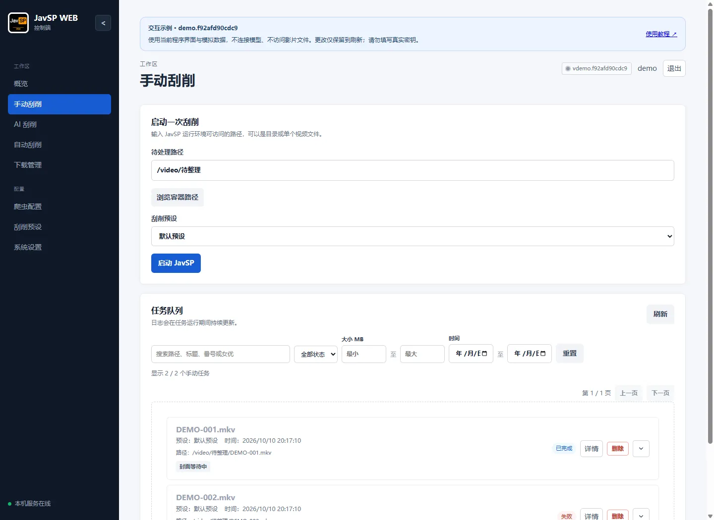
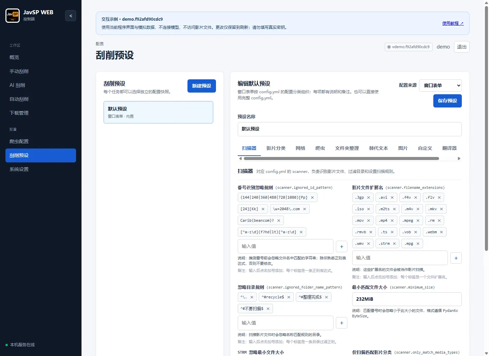

使用教程 / 02
刮削与整理
从单次任务到批量整理，了解预设、分类、分 P 与爬虫之间的关系。
媒体库：按目录索引自己的影片
媒体库以磁盘上的文件为准：先建一个媒体库（例如“正片”“素人”），再把存放影片的多个文件夹加进去，程序会读取其中的视频、NFO 与封面/剧照，把影片列出来。没有 NFO、没有封面、甚至没有番号的影片也会出现在列表里，方便你发现和处理；扫描本身不移动文件，也不创建刮削任务。
- 媒体库与文件夹：顶部按媒体库切换；每个媒体库可以包含多个文件夹，一个文件夹也能加入多个媒体库。新建时选择默认预设，之后可随时改名或改预设。
- 全部影片：标签栏最前面的“全部影片”跨所有媒体库汇总，用于统一搜索与浏览；它只读，添加文件夹、库设置需要在具体媒体库下操作，扫描会依次扫描全部媒体库。
- 添加文件夹：填写服务端能访问的路径（Docker 用容器内路径），可选择是否包含子目录，保存后立即扫描该库的全部文件夹。
- 最小文件大小：扫描遵循该媒体库预设里的“最小匹配文件大小”，更小的文件（例如混入的广告）不会进入索引；如果之前已经被索引，下次扫描会把对应记录移除，而不是标成“文件已丢失”。
- 扫描：只读取与比对，重复扫描是增量的。源文件被外部删除（或不再符合扫描条件，例如小于最小文件大小）后，下次扫描会把对应记录从媒体库移除；文件夹整体不可访问时（例如移动硬盘未挂载）会跳过清点，不会误删记录。
- 筛选：顶部统计和状态标签可按“缺资料 / 未刮削 / 刮削失败 / 文件丢失”过滤；搜索支持番号、标题、女优和路径。
- 分 P：同一影片的多个分片会合并为一张卡，卡片右下角显示文件数量。
- 移除文件夹：只把索引从这个库里去掉，磁盘文件不会被删除。
- NFO 唯一：每部影片只有一个 NFO，Emby / Jellyfin 与本程序读写的是同一个文件——单视频目录用
movie.nfo，多视频目录用视频文件名.nfo（引擎写 NFO 时也会被改成同一个名字）。多视频目录里的movie.nfo会被忽略，避免几部影片共用一份资料。 - 刮削后自动刷新：媒体库任务成功后，索引会立刻按抓取结果更新；即使 Emby / Jellyfin 打开了“保存 NFO”把 NFO 改写成只有标题的 stub，程序也会用任务记录里的资料补全并写回 NFO，卡片不会显示成“缺资料”。
- 失败重试：任务队列里失败的任务可以直接点“重新刮削”，或用工具栏的“重试失败”一次性把所有失败任务重新派回队列；重试会使用影片**当前**的番号（编辑资料后就是新番号），已在队列中的影片会自动跳过。
- 资料按钮：任务卡片和媒体库卡片上的“资料”按钮会打开同一个资料对话框，改完点“保存”即写入 NFO，点“保存并刮削”则顺带重新刮削；任务卡片上的“资料”还能顺手把番号补齐后再批量刮削。
- 批量刮削：工具栏的“批量刮削”会把**当前筛选范围**（媒体库 + 状态 + 搜索 + 分类）里的影片一次性加入刮削队列，所以可以先选“未刮削”或“缺资料”再批量执行。已标记“资料完整”的影片同样可以入队，用来补齐 NFO 里缺的字段（例如女优）；引擎重写 NFO 后，程序会把新结果里没有的旧字段补回，不会丢资料。预设里的“必须取得的资料”仍然生效，抓不到这些字段的任务会失败。
- 分类浏览：选择“按女优 / 按片商 / 按年份”后，主区域会切换成分类浏览（默认封面卡片，可切成标签列表），此时不再加载影片墙，切换分类和切换媒体库都很快；点某个分类即可看它的影片，返回条回到分类列表。分类很多时用“显示更多分类”分批展开。卡片视图把每个女优做成封面大卡片，点进去就是她的影片，返回按钮回到分类列表；搜索与排序在这两种视图下同样生效。
补资料、填番号与保存
点开卡片进入详情。资料可直接编辑，保存时会写入同目录的 NFO，已有文件先备份为 .bak；如果 NFO 在此期间被其他程序改过，会提示冲突而不是直接覆盖。没有番号的影片在详情里填写番号后点“保存并刮削”，程序会用这个番号创建单文件任务，不会重命名源文件，也不会扫描整个目录。
详情里的“打开文件所在目录”会在服务端主机的文件管理器里定位该影片并置前。这个按钮只对在主机上打开的页面显示：局域网其它设备看不到，直接调用接口也会被拒绝（403），避免别人一点就在你电脑上弹窗；Docker 部署同样不可用。文件名或路径过长时程序会先换成 8.3 短路径再定位，避免资源管理器退回“文档”；确实无法定位时会直接打开所在文件夹。
预设开启“整理文件到整理目录”时，刮削成功后文件会移到整理目录，卡片会标记“已整理”，索引自动跟随，不需要手动重扫。任务完成后，媒体库会重新读取该目录的 NFO 与图片来更新卡片；任务失败时保留你手动填写的番号，并显示失败原因，方便直接重试。删掉任务记录不会让影片从媒体库消失，这也是它和“概览”最大的区别。
手动刮削：提交、查看与处理结果
- 进入“手动刮削”，填写文件或目录路径；Docker 使用“浏览容器路径”，Windows 本机可使用文件选择器。
- 选定刮削预设，点击“启动 JavSP”。选择目录时，先等待扫描完成，找到的影片会陆续出现在任务队列中。
- 在任务队列查看状态、扫描数量和阶段进度。支持按状态、关键词、大小和时间筛选，并分页查看。
- 打开“详情”，先看最终结果，再展开数据源和图片日志。单个爬虫失败不代表整个任务失败；以最终是否取得必需资料并完成整理为准。

什么时候重试，什么时候处理文件？
- 只有图片失败：在任务详情中重试图片；封面还可从任务详情发起搜索、选择候选或上传，不必反复创建整部影片任务。
- 资料错误：在详情中编辑影片资料并保存；需要同步媒体库时按提示刷新。先核对番号与来源，避免把错误资料写回。
- 整理目标冲突：检查已有输出文件或剧照目录是否属于完整入库或未完成残留；不要把“删除任务记录”当作清理输出。
- 停止和删除：运行中的任务先停止再删除。删除记录不会自动撤销整理；可用的“还原”操作依赖该任务保存的整理记录与实际文件状态。
封面墙与隐私模式
“概览”是使用看板：顶部是任务总数、排队中/运行中、已完成、失败四项统计，下面是最近的任务记录，可展开查看日志、停止或删除任务。影片的浏览与分类请到“媒体库”页，那里以磁盘上的目录为准。
“媒体库”工具栏里的“隐私模式”开关会让封面、海报和剧照模糊显示，刷新页面后仍然生效。开关保存在当前浏览器，不影响磁盘上的图片和 Emby / Jellyfin 中的显示。
影片评论
打开影片详情即可查看同番号的公开评论。点击右上角头像进入“个人中心”，设置用户名和 6 位数字 PIN，即可创建匿名评论身份，无需邮箱或第三方账号。用户名不区分大小写，公开显示为“用户名#四位标识”；同名但 PIN 不同的用户会有不同的标识。
点击个人头像上的铅笔更换头像。弹窗支持按女优名字搜索，头像去除黑边后居中裁切。普通评论直接发布，疑似广告进入待审核，命中禁用词会提示修改。个人中心可查看自己的待审核、已发布和已隐藏评论。
在其他设备的个人中心选择“登录已有身份”，输入相同的用户名和 PIN，即可恢复头像与评论记录。请妥善记住 PIN，遗忘后无法找回。JavSP 的登录账号与评论身份分别管理；同一组用户名和 PIN 会被视为同一人，请勿分享。
评论支持点赞和取消点赞，每个评论身份只计一次。创建或登录评论身份、发表评论、点赞和举报时，会显示 Cloudflare 安全验证窗口，请按提示完成验证。验证过期、验证失败或无法连接时，不会提交操作；服务端还会限制操作频率。修改头像后，新评论使用新头像，旧评论保留发表时的头像。
评论由独立的 Cloudflare Workers + D1 服务处理和保存，Ubuntu 后台支持表格搜索、排序、多选、过滤设置和举报处理。删除的评论进入回收站，默认 30 天后自动清理，保留期内可以恢复。打开详情时，浏览器只向评论服务查询当前番号，不会上传影片文件、封面、文件路径或 JavSP WEB 登录信息。创建或登录评论身份时，用户名和 PIN 通过 HTTPS 交给评论服务验证；PIN 不保存也不公开。JavSP 只保存登录凭据与公开资料。发表评论时会发送评论内容和评论凭据，公开署名由服务端确定；服务使用 IP 的不可逆摘要限制频繁提交。
默认接口为 https://comments.rtioo.com。需要自行部署时，可用环境变量 JAVSP_COMMENTS_URL 指定其他评论服务；设为空字符串并重启可关闭评论区。Docker 修改环境变量后需重新创建容器。评论服务暂时无法访问时，不影响浏览影片和刮削。
“手动刮削”适合跟踪当前队列。任务日志摘要可复制，详细调试日志见排错章节。
挂载盘、STRM 与分 P 文件
CloudDrive2、WebDAV 等挂载目录仍按普通路径提交；先确保服务端能列出目录，Docker 内能通过挂载路径读到文件。目录枚举慢时查看扫描任务，避免连续点击启动创建重复扫描。
- 取消慢扫描：点击“停止扫描”停止后续任务创建；挂载盘响应慢时，停止操作也可能需要等待。已经加入队列的影片任务需分别停止。
- STRM：预设默认最小匹配大小为
232MiB。STRM 是很小的文本文件，可在“扫描器”勾选“STRM 忽略最小文件大小”，其他视频仍遵守大小限制。 - 分 P：同番号的
ABC-123-1.mp4、ABC-123-2.mp4可作为分段识别，也可用单个字母，如ABC-123-A.mp4、ABC-123-B.mp4（Emby 的影片名#.扩展名约定）。数字分段允许跳号，字母分段必须从 A 开始且连续；分段标记必须明确且不重复，一个目录里的广告视频不能因为共同目录名而被当作分 P。 - 批量选择：本机文件选择器支持一次多选。多选后手动修改路径会取消原多选列表。Docker 当前浏览器选择目录或单文件，不上传本地影片。
广告混入时优先检查“影片分类”规则，并启用“仅扫描匹配影片分类”。先试扫少量文件，确认广告被排除、正常影片仍能识别。
刮削预设：识别规则、来源与整理方式
管理员可在“刮削预设”新建、编辑和删除预设，选择可视化表单或完整 config.yml。修改并保存后，新任务会使用新设置；已经创建的任务仍使用原设置。
| 分组 | 重点检查 |
|---|---|
| 扫描器 | 扩展名、最小大小、STRM 开关、忽略目录、已有 NFO 的目录、多线程刮削数量。 |
| 影片分类 | 如何识别影片番号、先匹配哪个分类，以及匹配后使用哪些数据源。 |
| 网络 | 代理、站点镜像、请求超时与重试。用代理测试入口核对实际出口。 |
| 爬虫 | 各类影片使用的数据源、必须取得的资料，以及是否使用 AI 刮削。 |
| 文件夹整理 / 图片 | 输出目录模板、文件名、移动/硬链接、封面裁剪、剧照下载（剧照文件夹名为“前缀 + extrafanart”，留空即 extrafanart）。 |
| 翻译器 | 选择翻译标题、简介及翻译引擎；系统 AI 开启后，可为当前预设选择 AI 翻译。 |
分类为什么会影响数据源？
高优先级规则先匹配。正则需包含 (?P<avid>...)，avid_format 决定生成的番号。分类 ID 与“爬虫”中的来源列表对应；例如自定义“无码”规则先匹配了 FC2，实际使用的是“无码”来源，而不是 FC2 来源。遇到此类问题先调整优先级或该分类的数据源。

“跳过已有 NFO 的目录”检查的是扫描输入目录，不保证输出目标没有冲突。“仅扫描匹配影片分类”适合过滤无关视频，但前提是规则能识别你要保留的影片。新规则先用少量文件验证。
需要 AI 翻译标题或简介时，先在“系统设置 → AI 接入”打开“启用 AI 刮削”总开关，再在当前预设的“翻译器”中选择字段并勾选“启用 AI 翻译”。无需在预设“爬虫”中开启 AI 刮削，原翻译引擎配置也会保留。详见 AI 翻译设置。
已有影片覆盖方式
在“文件夹整理”中选择冲突处理策略。“从不”保留已有影片、封面和 NFO，跳过整理并保留源文件；“总是”替换已有版本；“按文件大小”保留较大的影片；“仅保留最新”比较文件修改时间，保留较新的影片。大小或时间相同时保留已有版本。多段影片统一检查，只要有一段需要保留就跳过整部影片，避免混合不同版本。同一文件名的不同视频扩展名也会参与比较；已有目录不会被整体删除。
保留已有影片时对应图片与资料不改写。替换已有影片后，任务不提供“还原文件”，避免清理原有资料。关闭“移动文件到整理目录”时，上述策略不参与原地资料更新。
输出模板和硬链接有文件系统要求，使用前核对输入与输出磁盘及权限；模板中可用的字段与本文“刮削预设”一节列出的字段一致。
爬虫与网络：先单独测试，再运行整批
- 进入“爬虫配置”，选择具体爬虫，输入一个确定存在的番号并运行测试。
- 查看抓取字段和运行输出：是否取得标题、封面，是否出现 403、超时或解析异常。
- 在“刮削预设 → 爬虫”调整该分类使用的数据源与顺序；爬虫配置页管理代码，预设页决定任务使用哪些爬虫。
- 自定义爬虫保存后再单独测试；仅保存代码不代表能抓到资料。内置爬虫只读，可移除和恢复。
代理地址由运行 JavSP WEB 的机器使用。Docker 中 127.0.0.1 指向容器，宿主机代理需填写容器能访问的地址。HTTPS 证书失败时检查站点域名、系统时间和代理证书，不要关闭证书校验。403 表示站点拒绝访问，还应检查网络出口和该站点的登录 Cookie。
代理使用自签名证书时，可将可信的 PEM 格式 .crt 文件只读挂载到容器的 /usr/local/share/ca-certificates/ 后重启。若自行改用非 root 用户运行容器，需要在构建镜像时安装证书。同步 Cookie 成功只说明读到了登录信息，站点仍可能要求重新登录或验证。
需要 AI 帮你制作爬虫时，在对话中说明目标站点和要提取的资料，检查生成的代码后再确认保存。保存后先测试一个番号，确认能取得资料，再用于批量刮削。